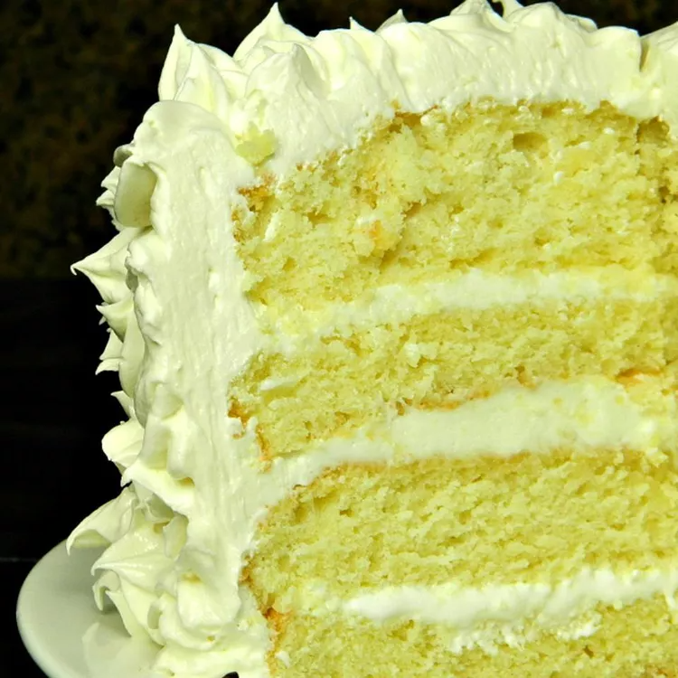

Home
Happy Birthday Cake

Image Credit: Allrecipes.com
Description
A tasty, dense, and moist cake perfect for any birthday party.
Ingredients
- 2 cups white sugar
- 1 cup unsalted butter, room temperature
- 1 teaspoon vanilla extract
- 4 eggs, separated and divided, at room temperature
- 3 cups all-purpose flour
- 3 teaspoons baking powder
- 2 pinches salt, divided
- 1 cup milk, room temperature
Directions
- Preheat the oven to 350 degrees F (175 degrees C). Grease and flour three 8- or 9-inch-diameter cake pans.
- Cream sugar and butter in a mixing bowl with an electric mixer until smooth and fluffy, about 5 minutes. Add egg yolks, one at a time, beating well after each addition. Mix in vanilla.
- Sift flour, baking powder, and a pinch salt together into a bowl. Add flour mixture to butter mixture in three batches, alternating with milk, beating batter briefly after each addition. Scrape down the sides and bottom of the bowl and beat for 1 more minute.
- Beat egg whites with a pinch salt in a separate bowl until stiff peaks form. Fold 1/3 of the egg whites into cake batter to lighten it; then gently fold in remaining egg whites. Pour batter into the prepared pans.
- Bake in the preheated oven until the cakes springs back when lightly touched with a fingertip and a tester inserted into the centers comes out clean, about 25 minutes. Remove from the oven and cool on a wire rack.